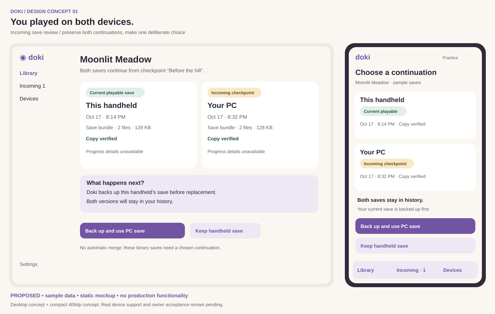
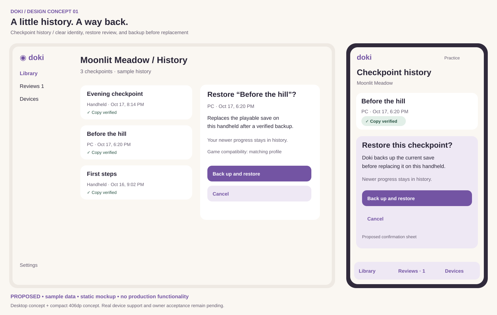
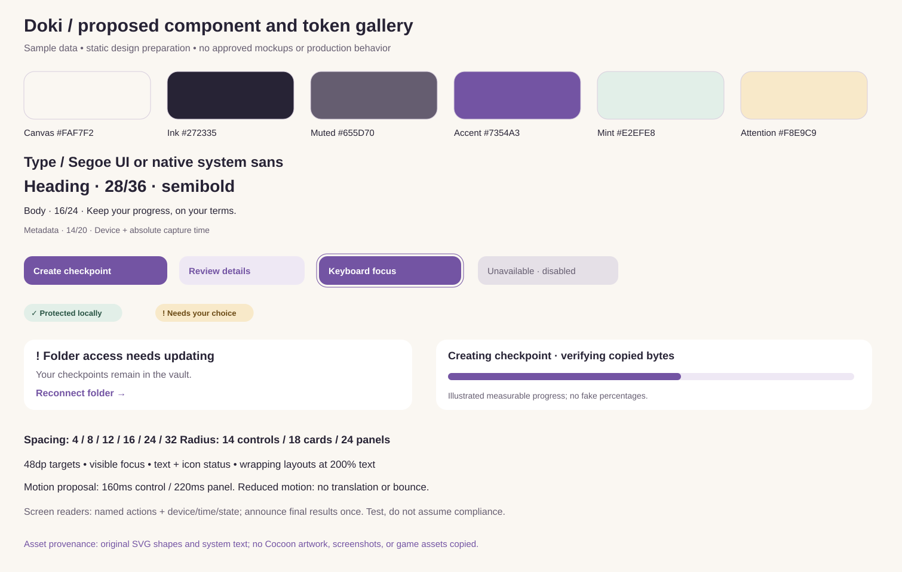

Doki · proposed design concepts
Original static mockups for D01 #31. Sample data. No production functionality. Owner acceptance pending. These are design preparation; F01 remains the sole engineering story.
SVG sheets are scalable visual concepts, not accessible application implementations. Read design notes and limitations. No animations run.
Incoming save review

History and restore

Components and tokens
